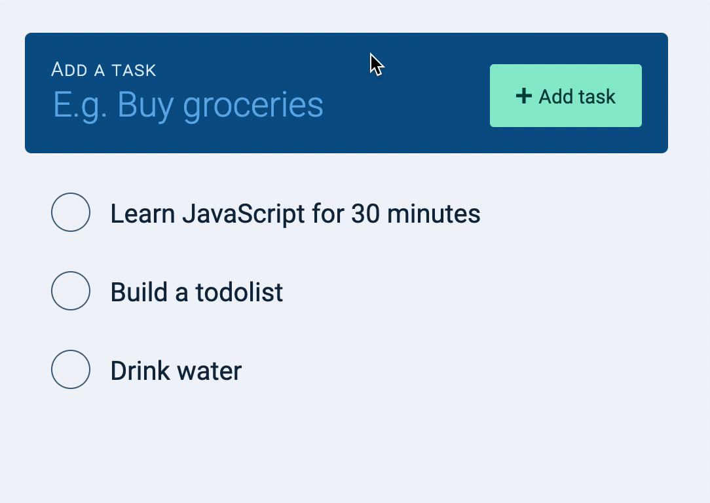
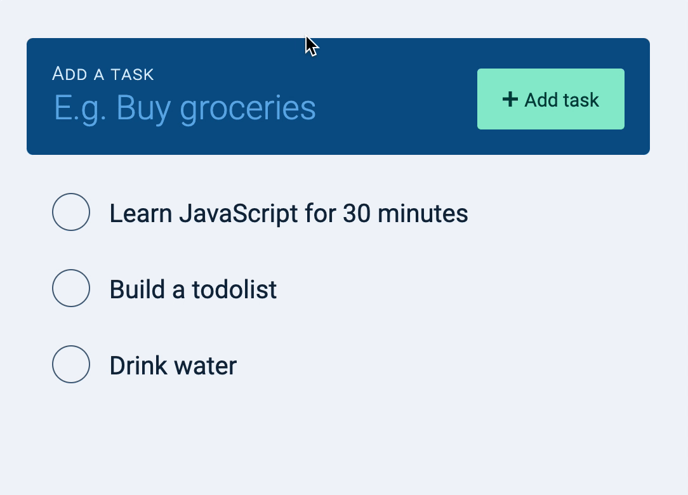
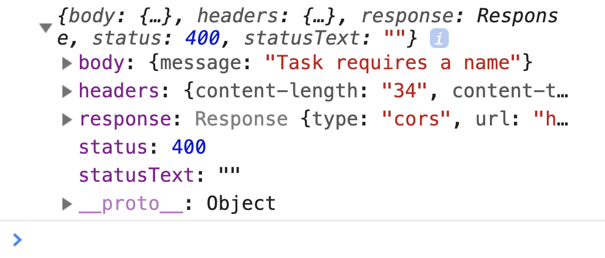
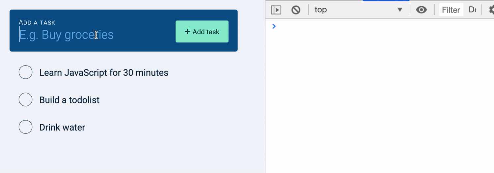
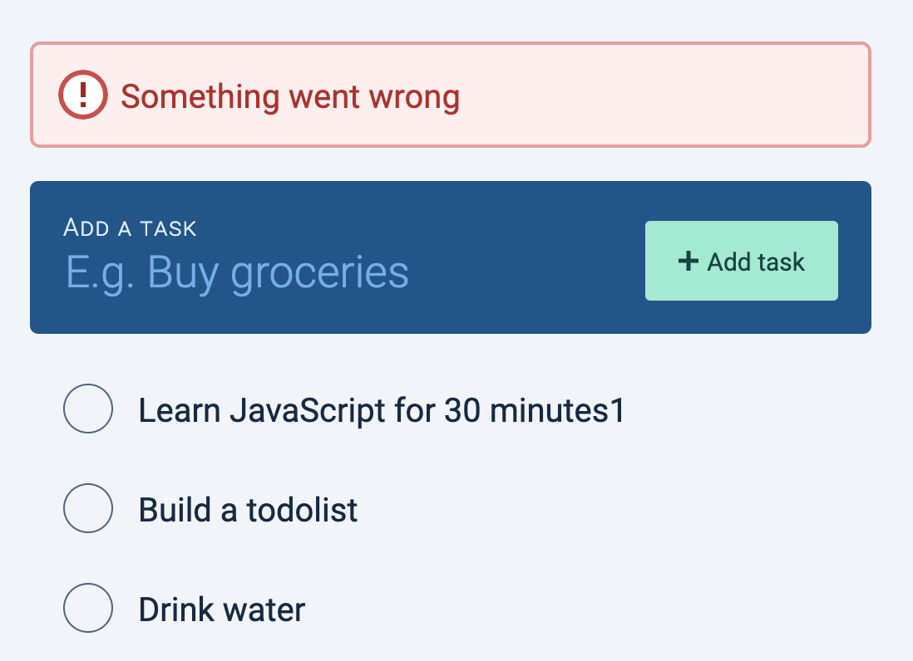
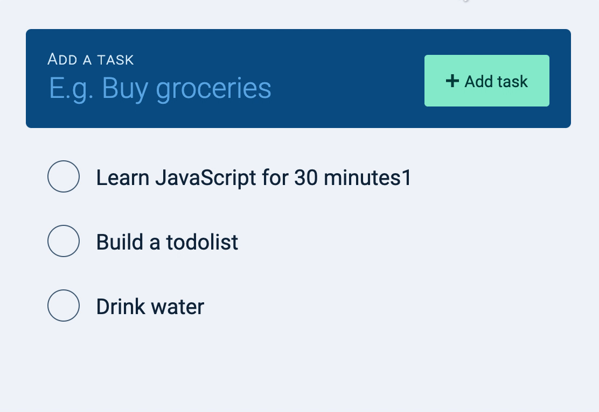
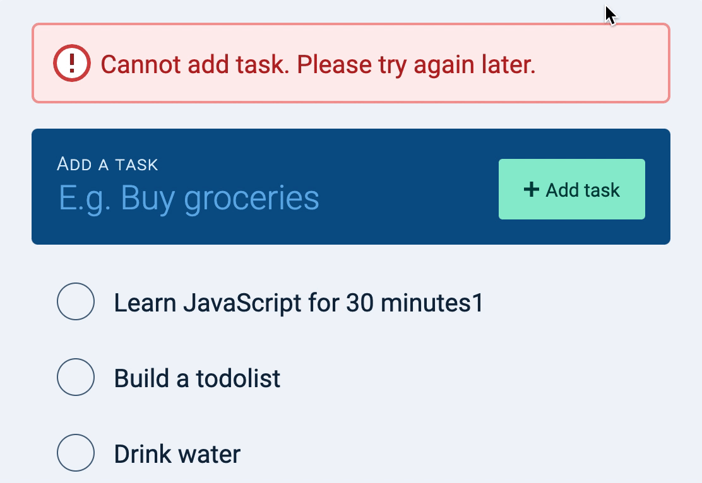

🛠️ Todolist: Creating tasks with Optimistic UI
We’ve completed the basic requirements for the Todolist. We can:
Fetch tasks
Create new tasks
Edit tasks
Delete tasks
As you build the Todolist, you may notice a lag time between user actions and DOM changes. (For example, when you add a task, you have to wait for a while before the task appears in the DOM).
We can eliminate this lag time with an approach called Optimistic UI.
What is Optimistic UI?
Optimistic UI is UI that performs a user’s actions before receiving a response back from the server.
You should only use Optimistic UI if you’re confident you’ll get a successful response back from the server. Do NOT use Optimistic UI if your server is unstable.
You can see some examples of Optimistic UI here .
When you build Optimistic UI, you need to think about three different states :
What happens between sending a request and receiving a response? (The loading state)
What happens when you receive a response? (The loaded state)
What happens if you get an error? (The error state)
Creating tasks with the Optimistic UI approach
Here’s the flow to create tasks with an Optimistic UI approach:
Listen to the event listener
Get the task name from the new task field
Create a task
Add the task to the DOM
Send a request
Handle the loading state
Handle the loaded state
Handle any errors received
First, we have to listen to the submit event to add tasks.
todolist.addEventListener('submit', event => {
event.preventDefault()
})
Second, we need to get the task name from the new task field.
todolist.addEventListener('submit', event => {
// ...
// Get value of task
const newTaskField = todolist.querySelector('input')
const inputValue = DOMPurify.sanitize(newTaskField.value.trim())
// Prevent adding of empty task
if (!inputValue) return
})
Next, we need to create a task.
At this point, our task doesn’t have an id yet. We need to generate one ourselves.
todolist.addEventListener('submit', event => {
// ...
const taskElement = makeTaskElement({
id: generateUniqueString(10),
name: inputValue,
done: false
})
})
And we want to add the task to the DOM.
todolist.addEventListener('submit', event => {
// ...
taskList.appendChild(taskElement)
})
Don’t forget to retain our UX enhancements from before:
todolist.addEventListener('submit', event => {
// ...
// Clear the new task field
newTaskField.value = ''
// Bring focus back to input field
newTaskField.focus()
})
(Did you notice this is the code we had before we added Ajax?).
Now on to the fun part.
We’ll send a POST request to the server after adding the task to the DOM. This saves the task in the database.
todolist.addEventListener('submit', event => {
// ...
zlFetch.post(`${rootendpoint}/tasks`, {
auth,
body: {
name: inputValue
}
})
.then(response => console.log(response.body))
.catch(error => console.error(error))
})
Handling the loading state
When we send a request, we want to let our users know we’re saving their task to the database. This tells them the operation has not succeed yet. Since the task has not been saved, they should not interact with the task.
Design-wise, we’re going to replace the checkbox with a spinner.

To do this, our makeTaskElement needs to know whether a task is in the loading state or the loaded state. We’ll add an extra argument, state to help us determine state.
const makeTaskElement = ({
id,
name,
done,
state
}) => {
// ...
}
If state is loading, we want to show a spinner. We can build the spinner this way.
const makeTaskElement = ({
let spinner = ''
if (state === 'loading') {
spinner = '<img class="task__spinner" src="images/spinner.gif" alt=""/>'
}
// ...
})
And we can use the spinner like this:
const makeTaskElement = ({
// ...
taskElement.innerHTML = DOMPurify.sanitize(`
${spinner}
...
`)
})
If you add a new task now, you’ll see this.
We don’t want the spinner and the checkbox to show up together.
We only want the spinner when state is loading. We only want the checkbox when state is loaded.
We can make this simple if we build the checkbox like how we built the spinner:
const makeTaskElement = ({
// ...
let checkbox = ''
if (state === 'loaded') {
checkbox = `
<input
type="checkbox"
id="${id}"
${done ? 'checked' : ''}
/>
`
}
// ...
})
We can use checkbox like this:
const makeTaskElement = ({/* */}) => {
// ...
taskElement.innerHTML = DOMPurify.sanitize(`
${spinner}
${checkbox}
...
`)
}
Let’s set the default state to be loaded so we don’t have to change makeTaskElement in code where we fetch tasks.
const makeTaskElement = ({
id,
name,
done,
state = 'loaded'
}) => {
// ...
}
We do, however, have to add a loading state when we create tasks.
todolist.addEventListener('submit', event => {
// ...
const taskElement = makeTaskElement({
id: generateUniqueString(10),
name: inputValue,
done: false,
state: 'loading'
})
// ...
})
Handling the loaded state
When a successful response returns from the server, we want to replace the spinner with the checkbox.
The easiest way to do this is:
Remove the task that contains the spinner
Add a task that contains the checkbox
First, let’s name the task that contains a spinner tempTaskElement since it is a temporary task.
todolist.addEventListener('submit', event => {
// ...
const tempTaskElement = makeTaskElement(/*...*/)
// ...
})
When a successful response returns from the server, we remove tempTaskElement.
todolist.addEventListener('submit', event => {
zlFetch(/*...*/)
.then(response => {
taskList.removeChild(tempTaskElement)
})
})
Then, we make a taskElement from the response. And we add this new task to the DOM.
todolist.addEventListener('submit', event => {
zlFetch(/*...*/)
.then(response => {
taskList.removeChild(tempTaskElement)
// Append task to DOM
const task = response.body
const taskElement = makeTaskElement(task)
taskList.appendChild(taskElement)
})
})

Handling error states
We need to stimulate an error to handle error states. There are many ways to create errors. Examples include:
Sending to a wrong endpoint
Missing a required field
Not authenticating yourself
For this tutorial, I’m going to miss a required field. I’m going to change name to named.
todolist.addEventListener('submit', event => {
// ...
zlFetch.post(`${rootendpoint}/tasks`, {
auth,
body: {
named: inputValue
}
})
.then(response => console.log(response.body))
.catch(error => console.error(error))
})

If the response is an error, we want to remove the temporary task from the DOM. We’d do this regardless of the error we receive.
todolist.addEventListener('submit', event => {
// ...
zlFetch(/*...*/)
.then(/*...*/)
.catch(err => {
taskList.removeChild(tempTaskElement)
})
})

Users may get confused if their tasks disappear from the DOM mysteriously. It makes sense for us to show an error message since something went wrong.
To make it simple, we’ll show the error message above the Todolist.

Here’s the HTML for the error message. (This HTML and the required CSS have been included for you in the starter folder).
<div class="flash-container">
<div class="flash" data-type="error">
<svg class="flash__icon"> <!-- ... --> </svg>
<span class="flash__message"></span>
<button class="flash__close"> <!-- ... --> </button>
</div>
</div>
When we receive an error, we want to make an error div. We can do this in JavaScript by creating a function called makeErrorElement.
const makeErrorElement = _ => {
// Make an error element
}
makeErrorElement should create an error element that I showed you above. It should have a flash class, and a data-type set to error.
const makeErrorElement = _ => {
const errorElement = document.createElement('div')
errorElement.classList.add('flash')
errorElement.dataset.type = 'error'
// ...
return errorElement
}
You can get the innerHTML for the error message from the HTML in the starter file.
const makeErrorElement = message => {
// ...
errorElement.innerHTML = `
<svg class='flash__icon' viewBox='0 0 20 20'> ... </svg>
<span class='flash__message'>Error message goes here</span>
<button class='flash__close'> ... </button>
`
return errorEl
}
makeErrorElement needs one argument—the error message.
const makeErrorElement = message => {
// ...
errorElement.innerHTML = `
<svg class='flash__icon' viewBox='0 0 20 20'> ... </svg>
<span class='flash__message'>${message}</span>
<button class='flash__close'> ... </button>
`
return errorElement
}
To show an error message, we need to create an error element with makeErrorElement.
Let’s set the error message to be Cannot add task. Please try again later.. (This may sound like a lousy error, but it’s a valid error. Bear with me. I’ll explain more about Optimistic UI errors in the next lesson).
todolist.addEventListener('submit', event => {
// ...
zlFetch(/*...*/)
.then(/*...*/)
.catch(_ => {
taskList.removeChild(taskElement)
const errorMessage = 'Cannot add task. Please try again later.'
const errorElement = makeErrorElement(errorMessage)
})
})
We can append the error message to .flashContainer to show it.
const flashContainer = document.querySelector('.flash-container')
todolist.addEventListener('submit', event => {
// ...
zlFetch(/*...*/)
.then(/*...*/)
.catch(_ => {
// ...
flashContainer.appendChild(errorElement)
})
})

Removing the error message
Users should be able to remove error messages once they read them. To remove messages, they can hover on the error message, and they’ll see a close icon. When they click the close icon, the error message should disappear.

This code should be quite intuitive for you at this point.
flashContainer.addEventListener('click', event => {
if (!event.target.matches('button')) return
const closeButton = event.target
const flashDiv = closeButton.parentElement
flashContainer.removeChild(flashDiv)
})
That’s it! Remember to correct your code so your requests don’t end up as errors!